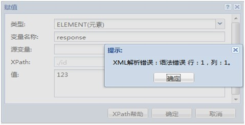
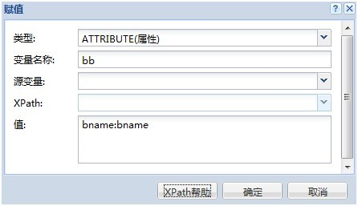

赋值Action配置帮助文档
配置项说明
| 配置项 |
描述 |
| 类型 |
将要赋值的目标变量的类型,分为ELEMENT(元素),TEXT(文本),CDATA,ATTRIBUTE(属性),NAMESPACE(命名空间),LIST(列表),BOOLEAN(逻辑型),STRING(字符串),NUMBER(数值). |
| 变量名称 |
将要赋值的目标变量的名称 |
| 源变量,XPath |
通过XPath将源变量的某个节点赋值给目标变量,如图赋值方式一 |
| 值 |
直接给目标变量赋值,如图赋值方式二 |
| 我们看到有八种类型可以操作，代表被赋值的变量的value类型。ELEMENT（元素）意味着变量可以赋值XML元素这样的类型， |
同理，依次是文本，CDATA类型（被解析器忽略的特殊字符集），XML属性，命名空间，列表，布尔型，字符串，数值型。 |
变量名称就是我们要操作的变量名称。例如a |
源变量时我们已有的可以操作的变量，比如我们定义的request，或者以后定义的其他变量。 |
XPATH是我们指定源变量里相应的信息。比如哪个节点，哪个属性。（详见XPATH手册） |
如果我们想独立赋值，可以源变量为空，在值后面制定变量的值。 |
下面是比较常用的类型的配置信息以及黑盒测试结果。 |
是系统自动生成的流水号,可以当做一个变量进行操作. |
所有类型的赋值有两种方式，一种是通过源变量，另外一种是通过源变量为空对后面的值进行赋值。当通过源变量赋值的时候，会根据XPATH主动匹配XPATH指定的类型，类型的指定将没有限制作用。 |
Ps：修改完了记得保存。 |
Element（元素）支持两种形式的赋值 |
有源变量 |
Element 无源变量 |
如果选择是元素但是赋值却不是XML格式就会报错 |

TEXT类型也支持两种方式的赋值 |
有源变量 |
无源变量 |
如果value里面有<> 这样的符号就需要用CDATA类型了 |
ATTRIBUTE（属性）也支持两种形式的赋值 |
有源变量 |
XPATH中对属性的引用用@符号，详细请见XPATH手册 |
上图是只对根节点下ID节点NAME的属性值 看结果： |
可以看出属性的格式是以冒号（：）分隔左边是属性名，右边是属性值 |
同理，在不用源变量赋值的时候要符合同样的格式。如下图： |

结果： |
NAMESPACE（命名空间）只支持没有源变量的赋值方式 |
命名空间是以冒号（：）分隔，前面是前缀，后面是URI。并且不能有空格，因为是以冒号为标志的。空格会被认为是前缀或者URI的一部分。 |
看结果 |

LIST（列表）支持通过源变量赋值的方式 |
当指定的XPATH不止一个节点时，会自动匹配LIST类型。 |
指定的ID节点有两个，所以变量LIST会显示SIZE为2。如图： |
BOOLEAN（逻辑型）只支持通过源变量赋值的方式。 |
如图： |
给boolean变量赋值passwd的值。 |
STRING（字符型）处理方式同TEXT类型，不再详述。量 |
NUMBER（数值型）只支持通过源变量赋值的方式 |
如图： |
如果PASSWD的值是NUMBER类型，会自动匹配NUMBER类型 |

赋值适用于这样的场景，源变量赋值以后将随着赋值变量的改变而改变，如果还想对源变量进行一些操作，请先用克隆。 |